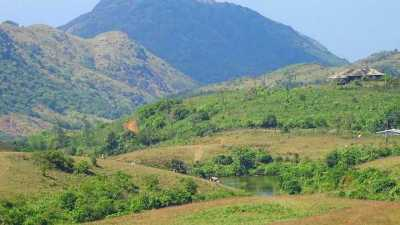

Kottayam
Kottayam district is famous for its rich heritage and literary tradition. It is renowned for its spice and rubber trade. Cradled by the backwaters and the Western Ghats, it is epitomised by its stretches of vast greenery, paddy fields and huge rubber plantations. Over five of the State’s leading newspaper publications originate from Kottayam. About four-fifth of books published in the State come from here as well. From trekking hotbeds like Nadukani and Kottathavalam to the rare avian life on display at the Kumarakom Bird Sanctuary, this district encompasses everything that God’s Own Country is famous for. Well connected to the entire State, it is full of interesting historical and cultural locations that tell the tale of how the district was forged into its current form.
Tourist Attractions

Kottathavalam
A fascinating cave carved out of rock surface is Kottathavalam lying on the top of a Murugan Hills at Kurisumala. The cave is considered to be the resting place for Madura Royal family.
Nadukani
After all the blessings from temples, it is time for some adventure. Nadukani is one such place nestled amid the wilderness of nature and densely wooded hills offering its visitors a beautiful trail for trekking.